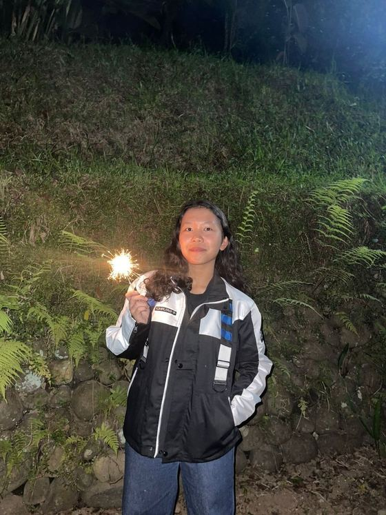

HTML & CSS
Building semantic, well structured layouts using modern techniques such as Flexbox and CSS Grid.
Bandung, Indonesia — Information Systems & Technology, Bandung Institute of Technology
I study Information Systems and Technology at ITB, where I explore the intersection of software, hardware, and structured thinking. From web applications to embedded systems and business case analysis, I focus on building solutions that are both functional and well reasoned.

Currently learning
Building semantic, well structured layouts using modern techniques such as Flexbox and CSS Grid.
Developing a solid understanding of asynchronous programming, including Promises and async/await, for reliable data handling.
Practicing structured version control with clear, meaningful commit messages and proper repository organization.
Working with ESP32 microcontrollers, GPIO configuration, and communication protocols such as UART.
Applying structured frameworks to analyze business problems, supporting both technical and strategic decision making.